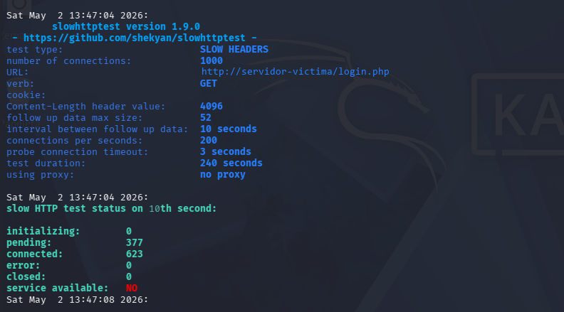

Slowloris: cómo una sola máquina tumba un servidor web (y cómo defenderte)
Una sola máquina, sin botnets y sin saturar la red, puede dejar un servidor web sin responder en cuestión de segundos. No es un ataque volumétrico: es Slowloris, un ataque de Denegación de Servicio de Capa 7 que no ahoga tu ancho de banda, sino tus conexiones. Lo reproduje en laboratorio para entenderlo por dentro y, sobre todo, para saber pararlo.
Qué es Slowloris y por qué es peligroso
Un ataque volumétrico clásico (flooding) busca saturar la red con tráfico masivo: es ruidoso y relativamente fácil de detectar. Slowloris hace justo lo contrario. Abre cientos de conexiones al servidor y envía las cabeceras HTTP a cámara lenta, de forma incompleta, manteniendo los sockets ocupados esperando datos que nunca llegan. Cuando se agota el límite de conexiones simultáneas del servidor, este deja de atender a usuarios legítimos.
Lo que lo hace tan traicionero para el defensor:
- No consume ancho de banda: el consumo de red es mínimo.
- Le basta una sola máquina: no necesita una botnet.
- Parece tráfico legítimo: son peticiones HTTP válidas desde una IP normal, así que evade los firewalls de red tradicionales.
La demostración: del reconocimiento al colapso
En un laboratorio controlado, con la herramienta slowhttptest, el ataque adopta la forma de un Slow Headers contra la página de login del servidor objetivo:
slowhttptest -c 1000 -H -i 10 -r 200 -u http://servidor-victima/login.php -t GETCada parámetro cuenta una parte de la historia que un defensor debe saber reconocer: -c 1000 mantiene 1000 conexiones abiertas a la vez; -H activa el modo cabeceras lentas; -i 10 envía un fragmento cada 10 segundos para mantener la conexión "viva"; -r 200 abre 200 conexiones nuevas por segundo.

Por qué funcionó: la vulnerabilidad no es el hardware
El servidor no cayó por falta de potencia, sino por configuración. Cuatro debilidades habituales lo hacen posible:
- Timeouts laxos: el servidor tolera esperas larguísimas por cabeceras que no llegan.
- Sin límite por IP: ningún tope de conexiones simultáneas por origen.
- Capa 7 = tráfico legítimo: las peticiones parecen válidas y evaden los firewalls de red.
- Sin WAF ni IDS: nadie alertó del volumen anómalo de conexiones abiertas.
Cómo detectarlo (perspectiva Blue Team)
Estas son las señales que delatan un Slowloris en curso:
- Pico de conexiones concurrentes desde muy pocas IPs de origen.
- Muchas conexiones en estado
ESTABLISHEDque no envían datos: esperan cabecera. - Workers/slots agotados con la CPU y el ancho de banda bajos — la pista clave que distingue Slowloris de un ataque volumétrico.
- Peticiones HTTP cuya cabecera se recibe a goteo y nunca se completa.
Regla de oro: si el número de conexiones abiertas sube pero el tráfico real no, sospecha.
Cómo defenderte: el playbook
La buena noticia es que la defensa más efectiva es también la más barata:
- Timeouts agresivos —
RequestReadTimeout(Apache) /client_header_timeout(Nginx). La medida de mayor impacto. - mod_reqtimeout — corta automáticamente las conexiones lentas.
- Límites por IP —
LimitRequestFields,MaxKeepAliveRequests. - Control de tasa —
limit_req_zoneen Nginx para frenar ráfagas. - fail2ban — bloqueo dinámico ante comportamiento anómalo.
- WAF / CDN (Cloudflare, Akamai) — absorben y filtran el tráfico antes de que llegue.
La clave conceptual: los timeouts estrictos impiden que las conexiones incompletas ocupen sockets indefinidamente, que es exactamente el mecanismo del ataque.
La lección
La robustez de un sistema no se mide por lo rápido que procesa peticiones, sino por su capacidad de gestionar conexiones anómalas. Slowloris opera bajo el radar, simulando tráfico legítimo y agotando los recursos de forma silenciosa pero letal. Entender el ataque es el primer paso para diseñar la defensa.
¿Tu servidor sobreviviría a esto?
En Adeodato ayudo a PYME e industria a detectar, contener y responder ataques reales — también en los entornos OT que las soluciones genéricas ignoran. Si quieres una revisión de exposición de tu infraestructura, hablemos.
Solicitar diagnóstico Ver el proyecto SOC Adeodato en GitHubRafael Adiosdado Caballero Diéguez · Ciberseguridad IT/OT · adeodato.es · GitHub